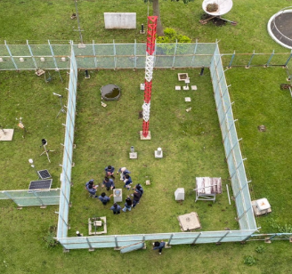
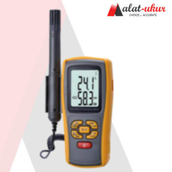
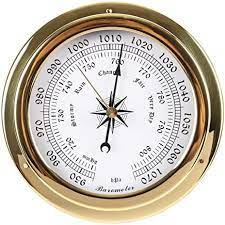
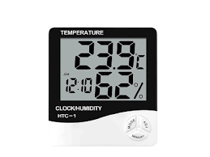
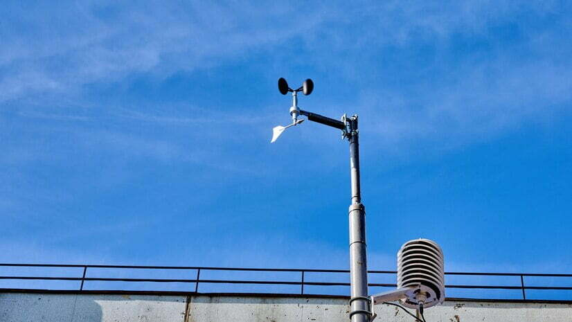
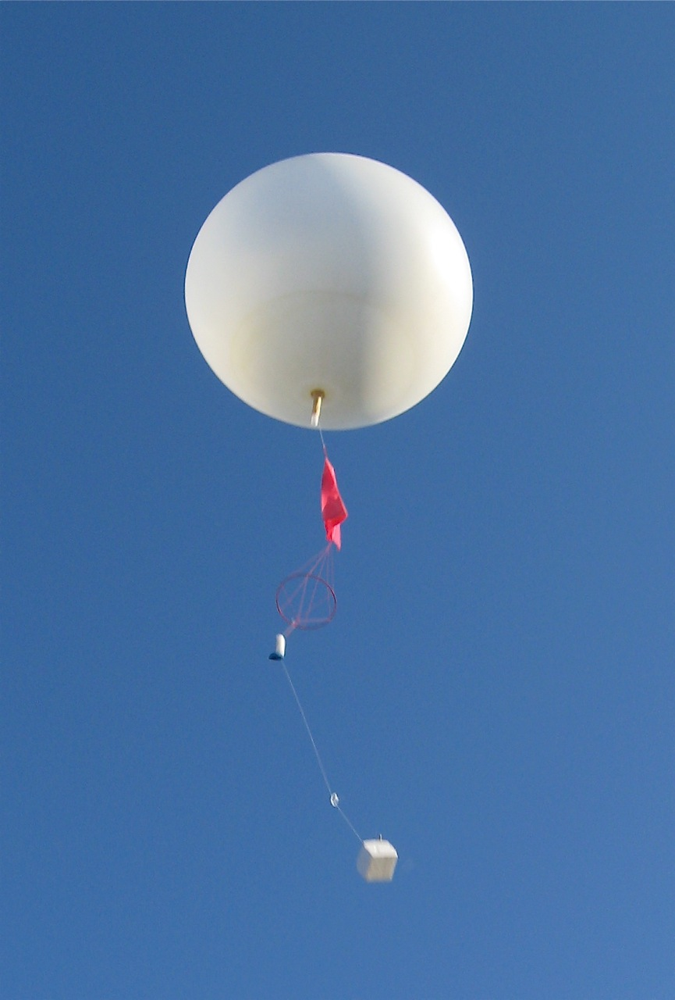

Taman Alat
Area terbuka untuk menempatkan instrumen pengamatan cuaca.
Taman Alat

Taman alat adalah area terbuka untuk instrumen cuaca.
Taman alat menjaga pengukuran tidak bias oleh bangunan, vegetasi, atau sumber panas. Instrumen dipasang dengan jarak tertentu supaya data tetap representatif.
Alat-Alat Utama
- Termometer — ukur suhu udara.

- Barometer — ukur tekanan atmosfer.

- Higrometer — ukur kelembapan udara.

- Anemometer — ukur kecepatan angin.

- Wind Vane — tunjuk arah angin.
- Rain Gauge (Ombrometer) — ukur curah hujan.
- Campbell-Stokes — ukur durasi penyinaran matahari.
- Radiosonde — balon cuaca ukur suhu, kelembapan, tekanan secara vertikal.



Fungsi Taman Alat
- Pusat pengamatan cuaca harian.
- Sumber data klimatologi jangka panjang.
- Validasi model cuaca dan data satelit.
Tabel Jarak Taman Alat ITB 1
| Alat / Parameter | Jarak |
|---|---|
| Panjang taman alat | 8,25 meter |
| Lebar taman alat | 11,9 meter |
| Panci evaporimeter timur - pagar | 1,48 meter |
| Panci evaporimeter barat - rain gauge | 1,19 meter |
| Evaporimeter barat - wind cup timur | 2,5 meter |
| Windcup barat - pagar | 1,65 meter |
| Windcup selatan - pagar | 1,58 meter |
| Panci evaporimeter & evaporimeter | 1,58 meter |
| Sangkar meteorologi - pagar | 2,11 meter |
| Campbell-Stokes - pagar | 2,11 meter |
| Campbell timur - pagar | 2,28 meter |
| Campbell barat - sangkar meteorologi | 3,77 meter |
| Rain gauge otomatis utara - pagar | 2,15 meter |
| Jarak antar rain gauge otomatis | 1,3 meter |
| Rain gauge timur - pagar | 3,05 meter |
| Rain gauge selatan - rain gauge utara | 2 meter |
| Merah barat - pagar | 4,28 meter |
| Merah selatan - rain gauge utara | 1,2 meter |
Tabel Jarak Taman Alat ITB 2
| Alat / Parameter | Jarak |
|---|---|
| AWS Barat - pagar | 1,18 meter |
Perawatan & Kalibrasi
- Bersihkan rain gauge, cek level alat, ganti kertas Campbell-Stokes, cek baterai/panel surya AWS.
- Kalibrasi rutin: termometer/higrometer (standar lab), anemometer (uji putaran), pressure sensor (barometer referensi).
- Gangguan: bayangan pohon/gedung, genangan air, bangunan sekitar, vegetasi tinggi, sumber panas (aspal/AC/knalpot).
Mulai Kuis
Kuis mencampur soal alat dan parameter. Klik restart untuk mengacak urutan.